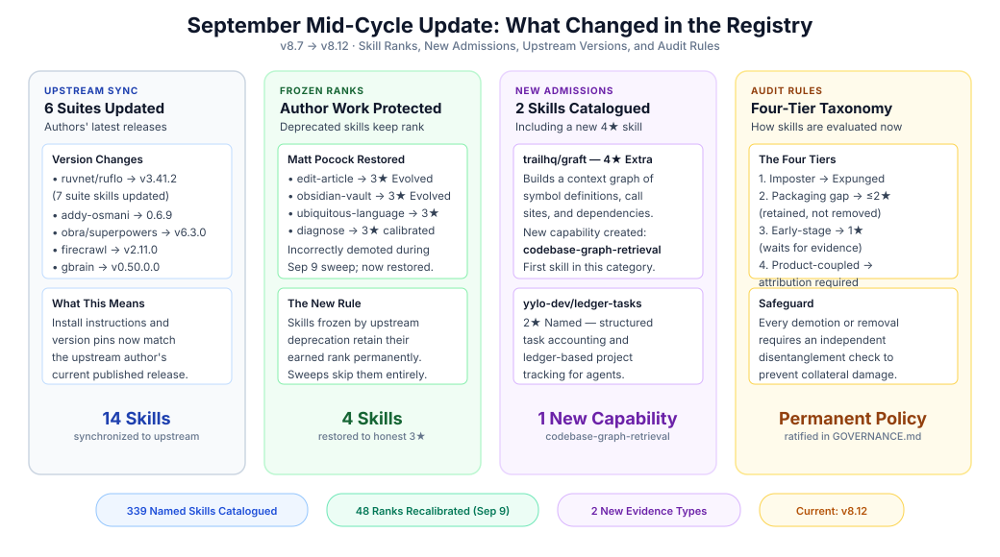
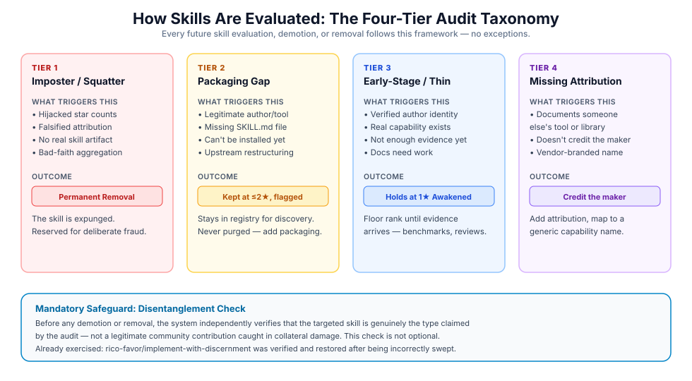

September Mid-Cycle Update: Frozen Ranks, Upstream Sync, and the Four-Tier Audit
Between early and mid-September 2026, the Gaia Skill Tree shipped releases v8.7 through v8.12 with four user-visible changes: six flagship skill suites were synchronized to their upstream authors' latest releases, a new Frozen Rank policy now protects author-pinned skills from automated sweep demotions, the registry admitted two new named skills including a 4★ promotion, and the Four-Tier Audit Taxonomy was ratified as the permanent framework governing how skills are evaluated, demoted, or removed. This report covers every rank shift, every new rule, and every upstream version change that landed.
What Users Should Know
Four things changed since the September 9 Rank Calibration:
1. Upstream skill suites are current again. Six suites — spanning 14 named skills — were synchronized to their authors' latest published releases. 2. Frozen ranks are now protected. Skills whose upstream authors have deprecated or archived them retain their earned rank permanently and cannot be demoted by automated recalibration sweeps. 3. Two new skills were admitted. trailhq/graft entered at 4★ and yylo-dev/ledger-tasks-yylo entered at 2★. 4. The Four-Tier Audit Taxonomy is now permanent policy. Every future skill evaluation, demotion, or removal follows a clear, published four-tier framework with mandatory safeguards against collateral damage.

Upstream Suites Synchronized
When upstream authors release new versions of their skill repositories, the registry must reflect those changes. The following six suites were updated to match their authors' latest releases:
| Suite | Author | Previous Version | Current Version | Skills Updated |
|---|---|---|---|---|
ruflo | ruvnet | v3.25.5 | v3.41.2 | 7 skills: agentdb, dual-mode, flow-nexus, github-suite, reasoningbank, ruflo-v3, ruflo |
agent-skills | addy-osmani | 0.6.3 | 0.6.9 | 1 skill |
superpowers | obra | v6.1.1 | v6.3.0 | 1 skill |
firecrawl-skills | firecrawl | v2.8.0 | v2.11.0 | 1 skill |
gbrain | garrytan | v0.49.0 | v0.50.0.0 | 1 skill |
hyperframes | heygen-com | v0.8.31 | v0.8.34 | 1 skill |
All version pins and installation instructions across these 14 named skills now reference the upstream author's current release. No star levels changed as a result of synchronization — version tracking is independent of trust evaluation.
The 48-Skill Rank Calibration (September 9)
Immediately before this cycle, a registry-wide Trust Magnitude recalibration adjusted 48 named skills to match their computed evidence grades. The full table was published in the September 9 report; the headline shifts were:
| Direction | Count | Examples |
|---|---|---|
| Demoted 5★ → 4★ | 6 | addy-osmani/agent-skills, obra/superpowers, ruvnet/ruflo, pbakaus/impeccable |
| Demoted 4★ → 3★ | 12 | firecrawl/firecrawl-skills, garrytan/cso, mattpocock/diagnose, ruvnet/agentdb |
| Demoted 3★ → 2★ | 6 | garrytan/garrytan, mattpocock/tdd, ruvnet/dual-mode |
| Demoted to 1★ | 16 | remotion-dev/ (12 skills), supabase/ (2 skills), laravel/upgrade-laravel-v13 |
| Promoted 1★ → 4★ | 1 | google-deepmind/workflow-skill-creator |
| Promoted 1★ → 3★ | 3 | firecrawl/firecrawl-research-index, leonxlnx/unlazy, panniantong/agent-reach |
| Promoted 1★ → 2★ | 2 | aplaceforallmystuff/log-to-daily, disler/agent-fusion |
These demotions followed the evidence — skills with thin or stale evidence lakes dropped to their computed grade floor, while skills with verified independent witnesses climbed.
Frozen Ranks: Protecting Author-Pinned Skills
A problem surfaced during the September 9 recalibration: skills intentionally frozen at a specific rank (because their upstream author deprecated or archived the repository) were being caught in automated recalibration sweeps and incorrectly demoted.
The New Rule
Skills with a documented upstream_deprecated lifecycle event now retain their earned rank permanently. Automated sweeps skip them entirely. If a frozen skill's rank is accidentally altered, the system detects the discrepancy and proposes a restoration command.
The Matt Pocock Restoration
Matt Pocock's core engineering skills were among the first frozen skills protected under this rule. Three skills that had been incorrectly demoted during the September 9 sweep were restored to their verified 3★ Evolved rank:
| Skill | Restored To | Status |
|---|---|---|
mattpocock/edit-article | 3★ Evolved | Frozen — upstream deprecated |
mattpocock/obsidian-vault | 3★ Evolved | Frozen — upstream deprecated |
mattpocock/ubiquitous-language | 3★ Evolved | Frozen — rank backfilled |
mattpocock/diagnose | 3★ Evolved | Calibrated to Trust Magnitude Grade B |
These skills earned their 3★ rank through verified evidence before their upstream repository was archived. The frozen rank policy ensures that historical achievement is preserved honestly.
New Skills Admitted
trailhq/graft — 4★ Extra Skill
trailhq/graft was admitted at 4★ under the new generic capability codebase-graph-retrieval. Graft builds a deterministic context graph of symbol definitions, call sites, and architectural dependencies across a codebase, giving agents immediate structural awareness of any repository they enter.
This is the first skill catalogued under the codebase-graph-retrieval capability — a recognition that agents need structured graph-based code understanding, not just keyword search or file-by-file reading.
yylo-dev/ledger-tasks-yylo — 2★ Named
yylo-dev/ledger-tasks-yylo was admitted at 2★ under the existing project-management capability. It provides structured task accounting and ledger-based project tracking for agent workflows.
The Four-Tier Audit Taxonomy
Every skill in the registry will eventually be evaluated. Until now, the rules governing evaluation, demotion, and removal were scattered across internal playbooks. Starting with this release, a single, permanent framework governs all audit outcomes.

The Four Tiers
Tier 1 — Imposter / Squatter → Expungement. Skills that exist through bad-faith aggregation (hijacked star counts, falsified attribution, no real skill artifact) are permanently removed from the registry. This is the harshest outcome and is reserved for deliberate fraud, not honest packaging mistakes.
Tier 2 — Packaging Gap → Retained at ≤2★. The author and concept are legitimate, but the repository lacks an installable SKILL.md or runnable entry point. The skill stays in the registry for discovery purposes but is honestly flagged as non-installable. It is never purged — the path forward is for the author to add proper packaging.
Tier 3 — Early-Stage / Under-Evidenced → 1★ Awakened. The author is verified and the capability is real, but the evidence lake is thin — perhaps only a self-attestation or a preliminary repository. The skill holds the floor rank until real evidence (benchmarks, peer reviews, independent adoption) arrives.
Tier 4 — Product-Coupled / Non-Generalized → Attribution Required. The skill documents a specific third-party tool (like PyMOL or RDKit) without crediting the tool's actual maker. The fix is not removal but proper attribution: credit the upstream maintainer and map the skill to a generic capability rather than a vendor name.
The Mandatory Safeguard
All four tiers carry a mandatory disentanglement check: before any demotion or removal, the system verifies that the targeted skill is genuinely the type claimed by the audit, not a legitimate community contribution caught in collateral damage. This safeguard was exercised immediately — rico-favor/implement-with-discernment was verified and restored after being incorrectly swept up in an unrelated audit pass.
Product-Attribution Detector
A new automated detector now flags skills that document a commercial or open-source library without acknowledging its actual maintainer. Six k-dense-ai library wrapper stubs (PyMC, PyTorch Lightning, Scanpy, scvi-tools, Stable-Baselines3, PyTorch Geometric) were identified as having zero attribution to their upstream authors. These remain in the registry at 1★ with needs-info status — the fix is for the contributor to add proper attribution and documentation, not for the registry to silently remove them.
New Evidence Types
Two new evidence types are now recognized across the registry:
npm-downloads: Measures verified download volume from the npm package registry, providing an adoption signal independent of GitHub stars.engagement: Captures community interaction metrics (discussions, issue activity, conference mentions) that demonstrate active use beyond passive star-clicking.
These types expand the range of evidence that can contribute to a skill's Trust Magnitude score, giving skills with strong real-world adoption but modest GitHub visibility a fair path to higher ranks.
Version Timeline
| Release | Key User-Visible Change |
|---|---|
| v8.7 | trailhq/graft admitted at 4★; yylo-dev/ledger-tasks-yylo at 2★; new npm-downloads and engagement evidence types |
| v8.8 | Product-Attribution Detector deployed; six k-dense-ai stubs flagged |
| v8.9 | Firecrawl, GBrain, and HyperFrames synchronized to upstream releases |
| v8.10 | Four-Tier Audit Taxonomy ratified as permanent governance policy |
| v8.11 | Ruflo, Agent-Skills, and Superpowers synchronized; documentation refresh |
| v8.12 | Frozen Rank policy deployed; Matt Pocock suite restored to 3★ |
As of v8.12, the registry contains 339 named skills across 294 catalogued capabilities, with all ranks aligned to their computed Trust Magnitude grades.